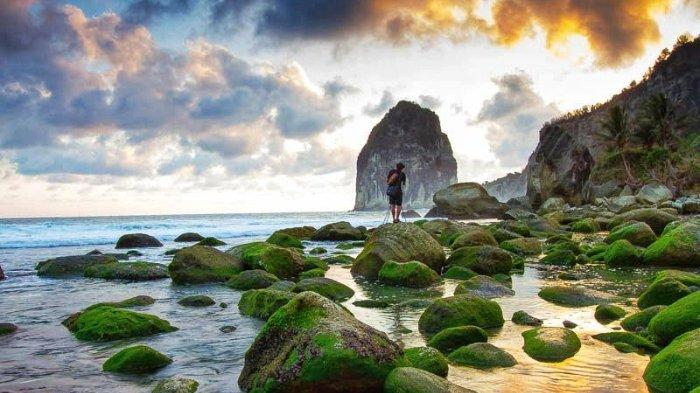
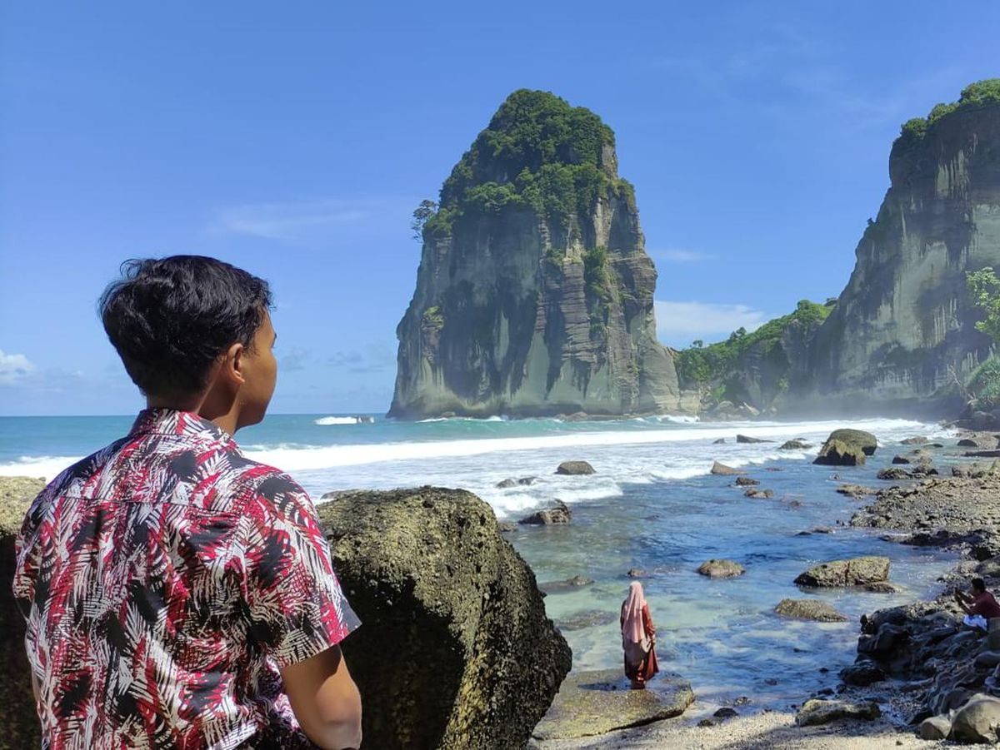

Pantai Pangasan Pacitan merupakan tempat wisata air yang menghadirkan pemandangan yang sangat indah, dan membuat para pengunjung terhipnotis karenanya.Apalagi ditambah dengan hadirnya sebuah tebing batu yang cukup tinggi di sisi timur dan barat. Tebing batu tersebut biasa disebut dengan Gunung Lanang dan Gunung Ganjuran. Yang paling menakjubkan dari Pantai Pangasan Pacitan ini ialah perpaduan antara sawah, bukit, serta lutannya yang biru. Tidak ada pasir di pantai Pacitan yang satu ini, yang ada hanya serakan bebatuan karang dengan ukuran yang beragam.
Alamat Pantai Pangasan Pacitan
Alamat dari Pantai Pangasan Pacitan terletak di Dusun Batulapak, Desa Kalipelus, Kecamatan Kebonagung, Kabupaten Pacitan, Jawa Timur.
Jalan Menuju Pantai Pangasan Pacitan
Rute menuju Pantai Pangasan Pacitan dari pusat kota Pacitan hanya membutuhkan waktu sekitar 30 sampai 40 menit untuk menuju Desa Kalipelus, dengan melalui jalur Lintas Selatan.
Sebelum Fly Over Gayam belok kiri memasuki pertigaan jalan yang menanjak, kemudian belok kanan hingga tiba di Pasar Gayam. Lurus terus mengikuti jalan Fly Over, masuk ke gapura Desa Klesem.
Setelah melewati Balai Desa Kalipelus kamu akan menjumpai pertigaan jalan, ambil arah ke kiri, terus ikuti saja jalan yang sudah di hotmix. Ketika kamu melihat pertigaan jalan kembali, tetaplah berada di arah kiri.
Kondisi jalannya tak terlalu lebar disamping itu jalannya penuh dengan turunan serta belokan, keadaan di sepanjang perjalanan masih sangat asri.
Kiri kanan jalan dihiasi dengan rimbunnya pepohonan, hanya sesekali kamu akan menjumpai rumah warga. Telah tersedia petunjuk arah ke Pantai Pangasan ini.
Jalan menuju Pantai Pangasan tidak begitu lebar, namun masih bisa dilewati oleh mobil. Area parkirnya terbagi menjadi dua, di bagian atas dan juga di bawah.
Setelah memakirkan kendaraan, lanjutkanlah dengan berjalan kaki. Jalanannya cenderung menurun, namun aksesnya sudah tertata dengan baik.
Yang paling menarik dari Pantai Pangasan ialah sebelum menuju Pantai kamu akan melalui area pesawahan warga terlebih dahulu.
Foto lain ditempat ini.
Temukan lokasi tempatnya.
Copyright © MyPacitan. All Right Reserved